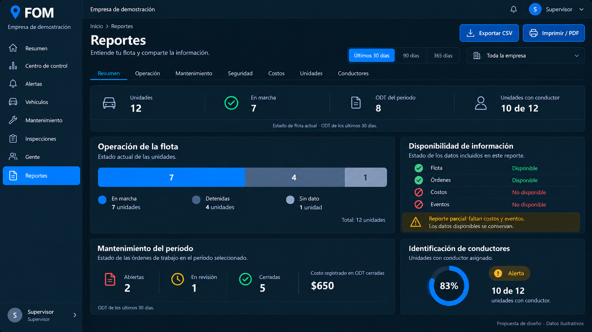
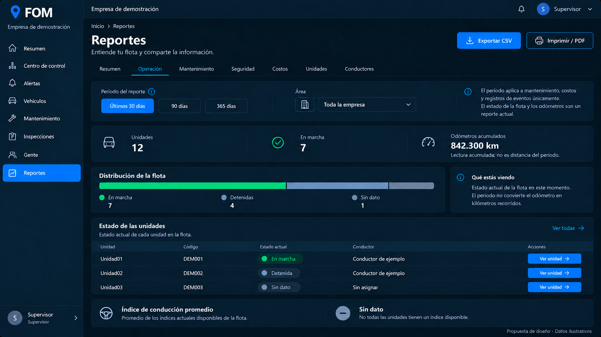
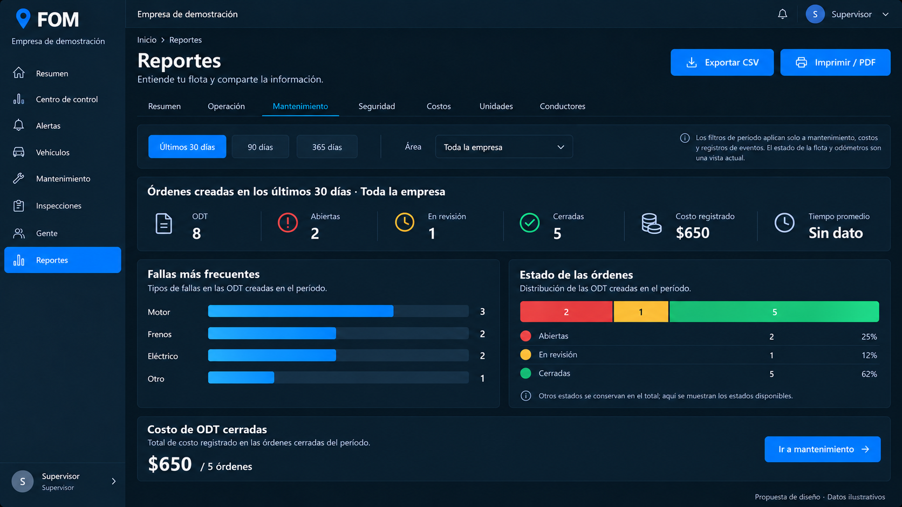
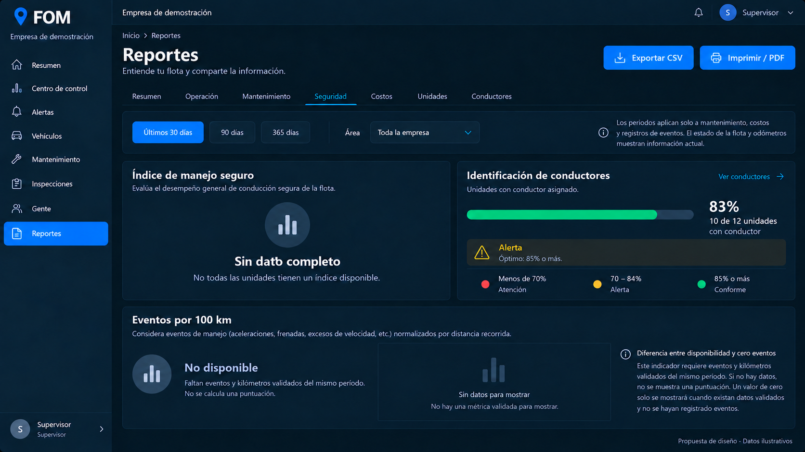
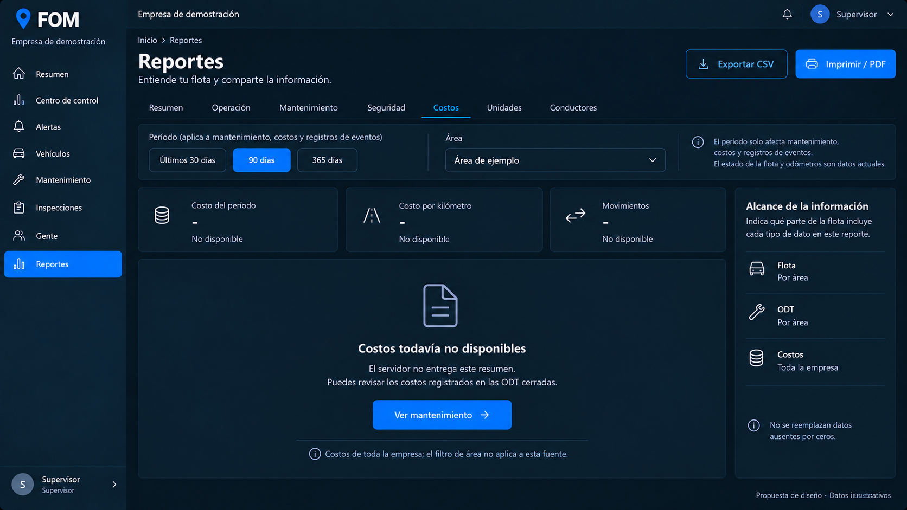
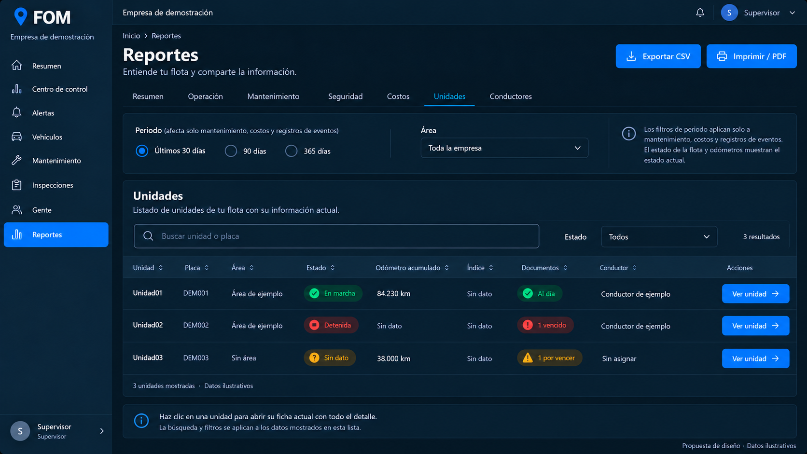
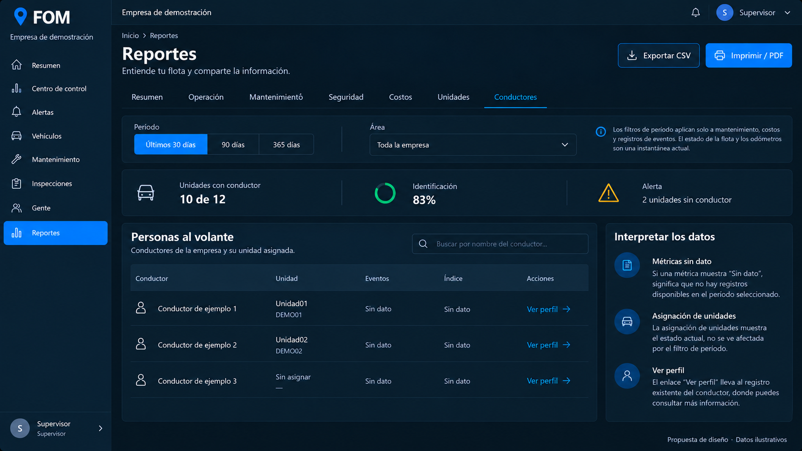
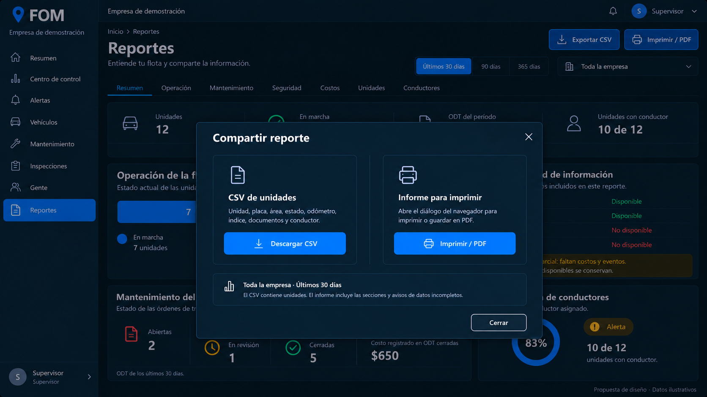
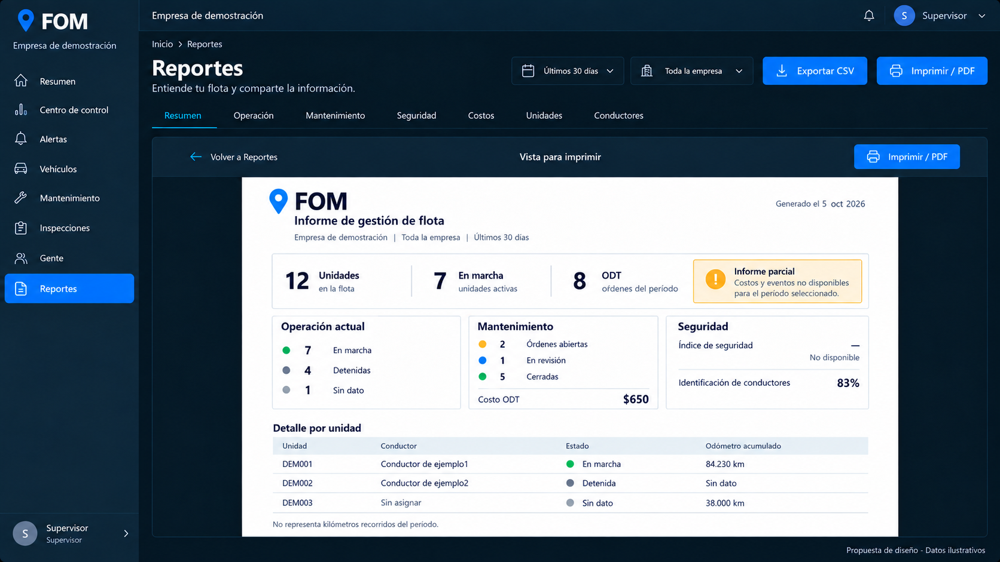
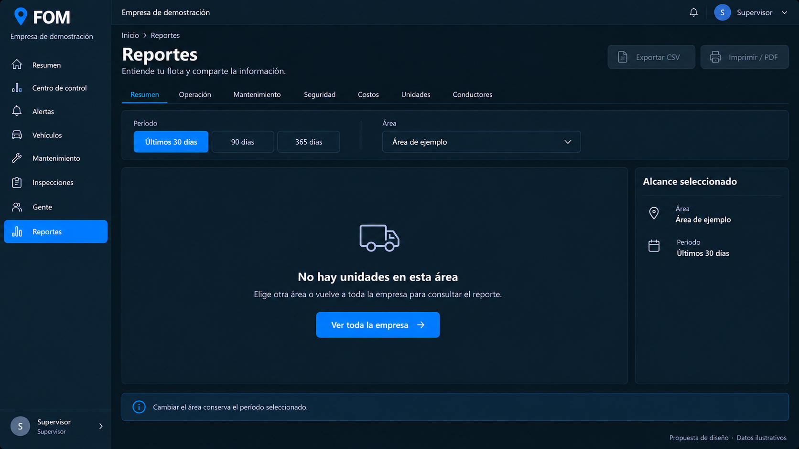

Diez imágenes: todas las áreas, exportación, informe para imprimir y estado sin unidades. Conserva el estilo aprobado de Mantenimiento e Inspecciones. Propuesta visual; todavía no aplicada al panel.
Las cifras y nombres son ejemplos ilustrativos. Las funciones proceden del Reportes actual; los nuevos filtros locales y la organización se describen en el contrato de diseño.

Abrir imagen completa








